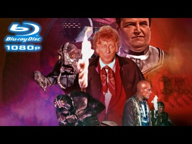
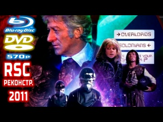
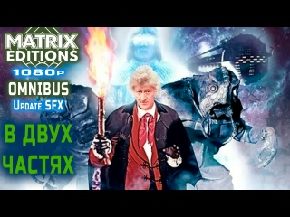
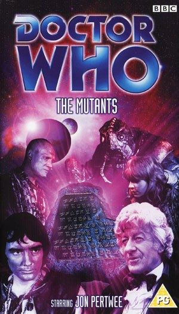
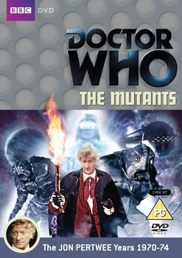
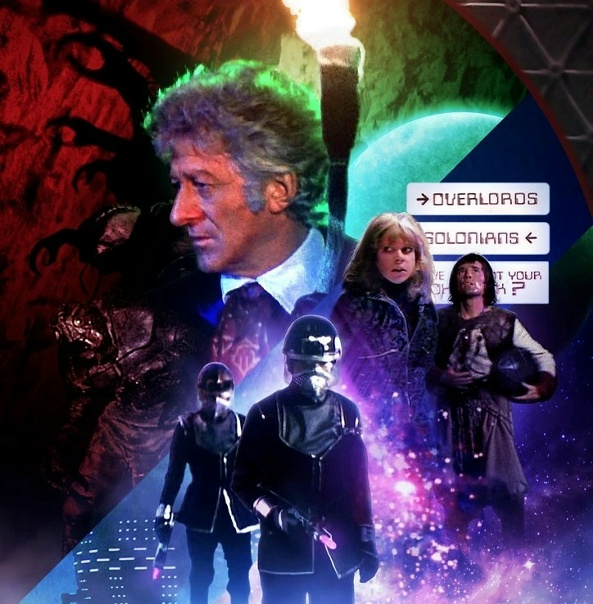
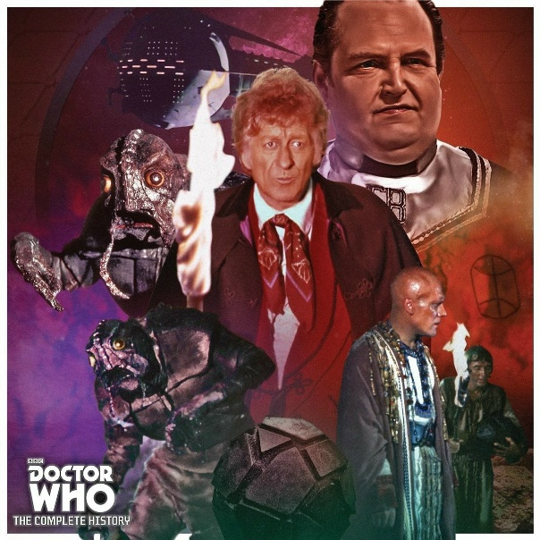
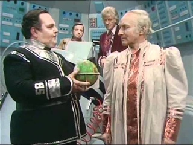

Субтитры: Русские {Дмитрий Корниенко} и Английские |  |
|---|---|
+ RSC реконструкция цвета, 2011 (эпизоды 1, 2) Субтитры: Русские {Дмитрий Корниенко} и Английские |  |
с обновлением визуальных эффектов (cunningmunki) Субтитры: отсутствуют |  |
| 1 и 2 эпизоды найдены в 525-строчном формате NTSC в 1980-х годах * Цвет преобразован (PAL) 3-6 эпизоды сохранились в цвете (видеокассета PAL 2") |
|---|
|
Повелители Времени передают Доктору загадочную капсулу и отправляют его и Джо на космическую станцию Небесная база-7, что вращается вокруг планеты Солос. Солос — колония угасающей Земной империи, и местный маршал намерен истребить коренной народ, солонианцев. Тем временем солонианцы начинают мутировать, и маршал объявляет это эпидемией, требуя зачистки. Доктор подозревает, что мутация — не болезнь, а часть естественного цикла, и капсула напрямую связана с судьбой целого вида. Одна из историй эпохи Третьего Доктора с антиколониальной повесткой — редкая для сериала тема распада империи и борьбы за независимость.
 VHS - февраль 2003 |  DVD - 31 января 2011 |  Blu-ray - 20 марта 2023 * Версия в нашей группе |
|---|


